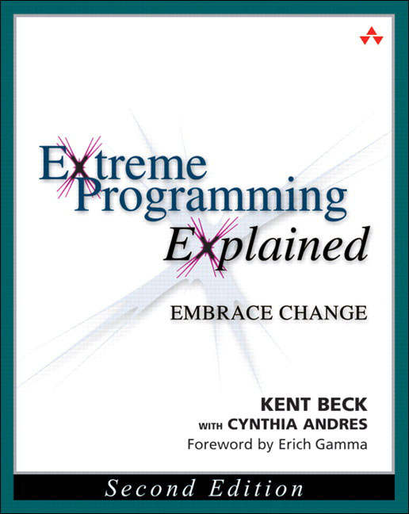
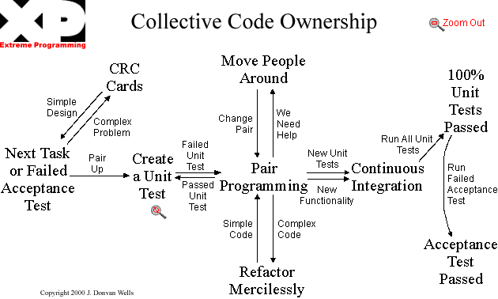

1er site indépendant de comparaison d’assurance, lancé en septembre 2012
Un lieu unique pour comparer rapidement des centaines d’offres
(assurances auto, moto, MRH, santé et emprunteur)
Organisation
L'équipe de développement est séparé en 4 streams
ou feature team, avec 20+ développeurs
Les différents stream sont responsables de la
qualité de leur code... on a pas de QA
Programmation en binôme
Définition :
une méthode de développement Agile dans laquelle deux
développeurs travaillent ensemble sur un même poste de travail.
Historique
... c'est un peu vieux
1978-1988
P.J. Plauger, un des développeur du langage C :
A chaque terminal, deux développeurs. Évidemment,
seulement un développeur utilise le clavier, mais les autres
regardent par dessus son épaule
1978-1988
P.J. Plauger :
inventeur ou précurseur de la technique, sans la nommer "pair
programming".
1995
Le terme arrive plus tard...
Developing in pairs, un pattern dans
un livre de Jim Complien
Constantine on peopleware, de Larry
Constantine

1998
Kent Beck : eXtreme
programming explained
Le binômage est au centre de la pratique

2002
Laurie Williams : Pair programming
illuminated
Premier livre dédié sur le pair programming
Premières études empiriques
Programmation en binôme
Définition :
une vieille méthode de
développement Agile dans laquelle deux développeurs travaillent
ensemble sur un même poste de travail.
Pour 15% d'augmentation du temps de développement
(si vous me croyez pas demandez a Mme Williams...)
Avantages pour un développeur
améliore la satisfaction des développeurs
améliore les capacités de résolution de problème
permet de découvrir de nouveaux idiomes
rend les tâches difficiles plus accessibles
rend les tâches monotones plus intéressantes
Avantages pour une société
améliore la cohésion d'équipe
améliore les problématiques de recrutement
augmente le "nombre bus"
les inspections sont effectuées JIT
permet de faire de la revue de code gratuitement
Avantages pour un produit
améliore la qualité du design
diminue les coûts de productions
moins de chance de faire la solution "sale"
C'est tu pas beautiful mon buddy boy ?
Programmation en binôme
Définition :
une vieille méthode de développement Agile efficace et éprouvée dans laquelle deux
développeurs travaillent ensemble sur un même poste de travail.
Et pourquoi personne n'en fait, du pair programming ?
Le travail en équipe...
... est indéfini dans notre métier
Le développement...
... est souvent appris comme une activité solo
La mentalité rockstar...
... est encouragée
Difficile à justifier auprès des gestionnaires...
Ça va prendre le double du temps
... les idées sont fausses mais bien ancrées
Auditoire : "Je suis convaincu !"
... et on fait comment ?
Pilote
développe
explique sa démarche
vérifie
réfléchis aux problèmes
garde la structure globale en tête
Copilote
Une recette simple comme la poutine !
0Créer un environnement de développement
avec des outils accessibles...
1Sélectionnez correctement votre paire
2Sélectionnez une tâche assez définie
...mais pas trop !
3Faire confiance en son partenaire et le supporter
4Parler beaucoup
"qu'est-ce que tu penses de..."
"comment ferais-tu pour..."
"je vais tester comme ça..."
5Se synchroniser souvent et chercher l'approbation
6Célébrer
7Varier les paires, varier le temps de travail
8Tourner souvent
9Faire des rétros sur la pratique
10Planifier les paires dans le temps
11Donner un temps de "jello"
Comme toute méthode, c'est avant tout une question de culture
ça se développe
ça se travaille
ça s'apprend
Programmation en binôme
Définition :
une vieille méthode de développement Agile efficace et
éprouvée dans laquelle deux développeurs travaillent ensemble sur un
même poste de travail. C'est une culture qui
se développe, s'entretient et se célèbre.